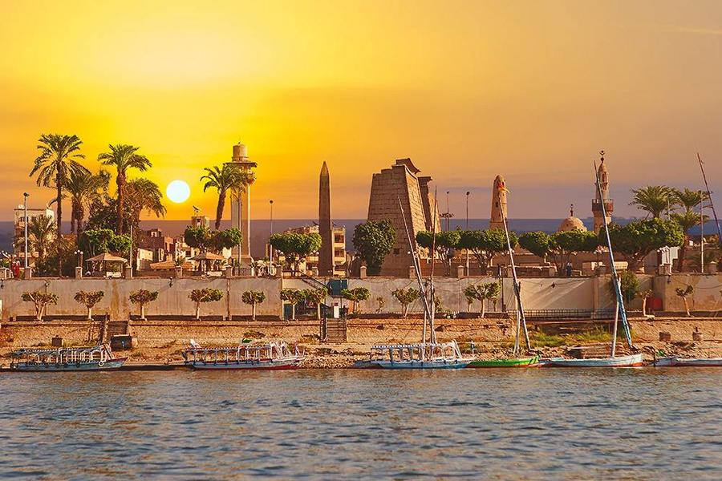

The Egyptian city of Luxor
Luxor .. the city of a third of the world's monuments Luxor is a city in Upper Egypt located on the site of the ancient Egyptian city of Thebes. Luxor is characterized by the largest open museum in the world. It is also famous for being one of the most important tourist and archaeological cities in the world.
A Brief History of Luxor Luxor was the ancient city of Thebes, and the capital of Upper Egypt in the era of the New Kingdom, and it was the glorious city of Amun, which later became the god Amun Ra, and the city was known in ancient Egyptian texts as the city. From the scepter, and in a later period the Greeks called it Thebes, then the Romans called it Thebes. The city of Thebes was known as the city of a hundred gates, and sometimes south of Heliopolis, to distinguish it from the city of Heliopolis, which was the main center for the worship of the god Ra in the north.
The importance of the city of Thebes began to emerge in the era of the Eleventh Dynasty when it grew as a thriving city across the Nubian-Egyptian race, and was famous for its high social status and luxury, as well as for being a center of wisdom. art, religion, and political supremacy, and Montgoutepe II brought stability to the land after the unification of Egypt after the troubles of the first intermediate period, the city grew more at that time, and Thebes played a major role in expelling invading forces such as the Hyksos from Upper Egypt, and from the era of the Eighteenth Dynasty until the Twentieth Dynasty The city flourished as a great religious, political and military capital of ancient Egypt.
Luxor city site Luxor is located in the south of Egypt and has an area of about 416 square kilometres. There are many places to visit in Luxor such as: Karnak Temple Karnak Temple The Karnak temple complex, better known as Karnak, includes an enormous mix of churches, temples, stupas, and other buildings. The construction of the temple began during the reign of Senusret I in the Middle Kingdom and continued until the Ptolemaic era. Karnak Temple is the second largest ancient religious site in the world after Angkor Wat in Cambodia. The temple consists of four main parts which are open to the public. Valley of the Kings Valley of the Kings The Valley of the Kings or the Valley of the Gates of the Kings is a valley in Egypt in which tombs were built for the pharaohs and nobles of the New Kingdom for nearly 500 years from the sixteenth century BC until the eleventh century BC, and the valley is located on the western bank of the Nile River opposite Thebes in the heart of Thebes cemetery, The Valley of the Kings consists of two valleys, the eastern valley where most of the royal tombs are located, and the western valley. Grateful giants Grateful giants
The Colossi of Memnon are the colossal stone statues of Pharaoh Amenhotep III, who ruled during the Eighteenth Dynasty, for the past 3,400 years. The giants were stationed in the necropolis of Thebes, west of the Nile River from the city of Luxor, and the twin statues represent an image of Amenhotep III in a sitting position, with his hands relaxed on his knees, and his gaze directed east towards the Nile. The statues have suffered some damage over time.Grateful giants The Colossi of Memnon are the colossal stone statues of Pharaoh Amenhotep III, who ruled during the Eighteenth Dynasty, for the past 3,400 years. The giants were stationed in the Thebes necropolis, west of the Nile River from the city of Luxor, and the twin statues represent the image of Amenhotep III in a sitting position, with his hands relaxed on his knees, and his gaze directed east towards the Nile. river. The statues have suffered some damage over time
Habu City The mortuary temple in the city of Hippo is a very important building dating back to the era of the New Kingdom, and it is located on the West Bank of Luxor, regardless of its size and its artistic architectural importance. Perhaps the temple is the most famous source of inscriptions showing the defeat of the peoples during the reign of Ramses III. meters, and it was designed by the Orthodox, and it is similar to the nearby mortuary temple. To Ramesses II, which is the Ramesseum Temple.
Luxor temple Luxor Temple is a large ancient Egyptian temple located on the eastern bank of the Nile River in the city of Luxor today. It was founded in 1400 BC. It is known in the Egyptian language as Ibet or the Southern Sanctuary, and it houses many of the greats. Temples on the eastern and western banks. The main temples are four, the Temple of Seti I, the Temple of Hatshepsut, Deir el-Bahri, and the Temple of Ramesseum. Valley of the Queens The Valley of the Queens is a place in Egypt where the wives of the pharaohs were buried in ancient times, and in ancient times it was known as Ta-Set-Neveru, which means a place